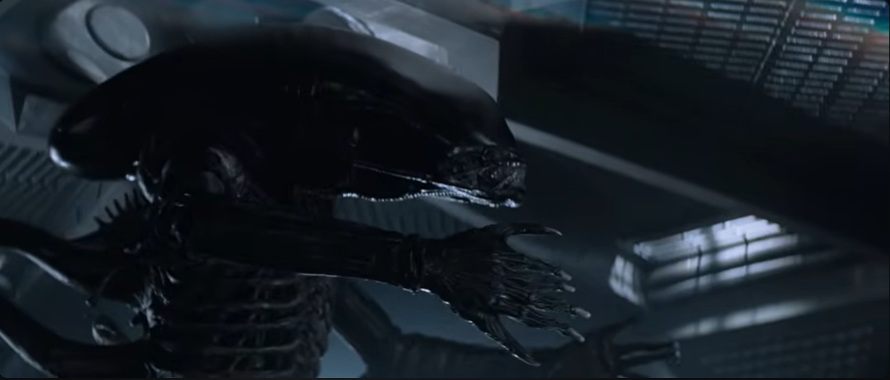

Alien (1979): Big Chap

This is Big Chap. The first Xenomorph to appear on screen.
If you haven't watched the movie (why are you here, watch the movie), he is the antagonist of the film.
He slowly hunts down each crew member of the ship, Nostromo.
Big Chap is the most iconic one of the Xenomorphs because he is one that brought forth the Alien universe.
In fact, he doesn't even die at the end of Alien. He reappears in Alien: Romulus in a harden-rock case, and is released by scientists.
He does die in Alien: Romulus, but not before killing basically everyone on the research vessel.
So, Big Chap makes sure to go out in a bang, and being an awesome Xenomorph.
Home Page | Drone | Warrior | Best Xenomorph | Xenomorph Runner